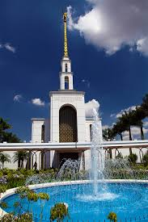

WDD 130
Além de todos as atrações que São Paulo Possuí, Temos algo que poucas cidades são privilegiadas em ter
Templo de São Paulo, localizado na avenida Av. Prof. Francisco Morato, 2390 - Caxingui, São Paulo - SP, 05512-300
O Templo de São Paulo Brasil é o 19º templo construído e o 17º em funcionamento da Igreja de Jesus Cristo dos Santos dos Últimos Dias. Localizado na cidade brasileira de São Paulo, foi o primeiro templo santo dos últimos dias construído na América do Sul e o primeiro a usar um único andar e design de torre única
